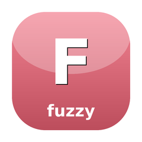

Fuzzy string matching with scored matched indices
Fuzzy string matching that returns which characters matched and their score. Two algorithms: Smith-Waterman (local alignment) and Sahilm (gum-style scoring with separator/camel-case bonuses). The matched indices enable filter-highlighting UIs that were impossible with score-only matchers. Extracted from candy-forms; back-compat shims left in candy-forms and candy-lister for migration.
composer require sugarcraft/candy-fuzzy:@devuse SugarCraft\Fuzzy\FuzzyMatcher;
use SugarCraft\Fuzzy\Matcher\SmithWatermanMatcher;
use SugarCraft\Fuzzy\MatchResult;
use SugarCraft\Fuzzy\Highlighter;
$matcher = new SmithWatermanMatcher();
// Single match — returns null when no match
$result = $matcher->match('foo', 'foobar');
// $result->score === 3
// $result->indices === [0, 1, 2] (0-based character positions)
// $result->candidate === 'foobar'
// Match all candidates, sorted by score desc then candidate asc
$results = $matcher->matchAll('ab', ['apple', 'banana', 'cabbage', 'cabbage']);
// Results sorted: cabbage (score 2) before banana (score 1) before apple (score 0)
// Use Highlighter to mark matched runs with ANSI codes
$highlighter = new Highlighter();
echo $highlighter->highlight($result, fn($s) => "\e[1;31m{$s}\e[0m");
// Output: 'foober' with positions [0,1,2] highlighted in bold redTakes a MatchResult and a styler callable(string): string, returns the candidate string with matched runs passed through the styler. Non-matched runs are returned unchanged.
| Class | Method | Description |
|---|---|---|
| FuzzyMatcher | match(string $query, string $candidate): ?MatchResult | Single match or null |
| FuzzyMatcher | matchAll(string $query, iterable $candidates): list<MatchResult> | All matches sorted by score desc |
| MatchResult | score(): int | Match quality score (higher = better) |
| MatchResult | indices(): list<int> | 0-based matched character offsets |
| MatchResult | candidate(): string | The matched candidate string |
| SmithWatermanMatcher | implements FuzzyMatcher | Local sequence alignment algorithm |
| SahilmMatcher | implements FuzzyMatcher | Separator/camelCase bonus algorithm |
| Highlighter | highlight(MatchResult, callable(string): string): string | Apply styler to matched runs |